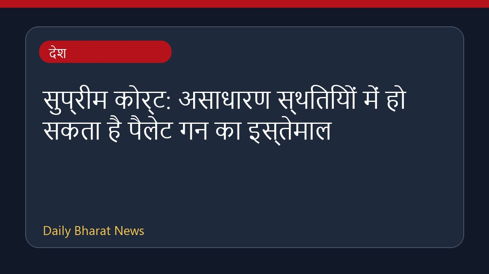

सुप्रीम कोर्ट: असाधारण स्थितियों में हो सकता है पैलेट गन का इस्तेमाल

सुप्रीम कोर्ट ने कहा है कि भीड़ नियंत्रण के लिए पैलेट गन का उपयोग केवल असाधारण स्थितियों में ही किया जा सकता है। अदालत ने जंतर-मंतर पर हुए प्रदर्शन के दौरान रैपिड एक्शन फोर्स के गोला-बारूद का लॉग सुरक्षित रखने का निर्देश दिया है। इसके साथ ही दिल्ली सरकार को घायल प्रदर्शनकारियों का उचित इलाज सुनिश्चित करने को कहा गया है। विशेषज्ञों ने चेतावनी दी है कि पैलेट गन के इस्तेमाल से इलाज के बाद भी स्थायी विकलांगता और अपूरणीय क्षति हो सकती है। सुप्रीम कोर्ट इस मामले में उपयोग किए जाने वाले प्रोटोकॉल की जांच कर रहा है।
मूल स्रोत: India News Sources
Pellet guns: Supreme Court cites ‘exceptional situations’, says RAF munition log to be preserved - Telegraph India ↗
Pellet guns: Supreme Court cites ‘exceptional situations’, says RAF munition log to be preserved - Telegraph India ↗